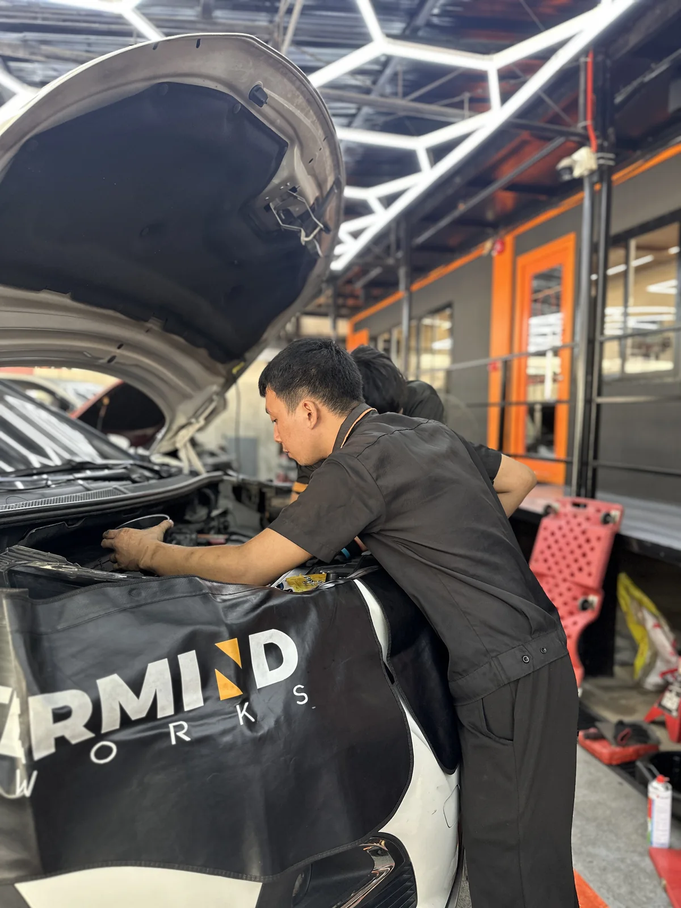
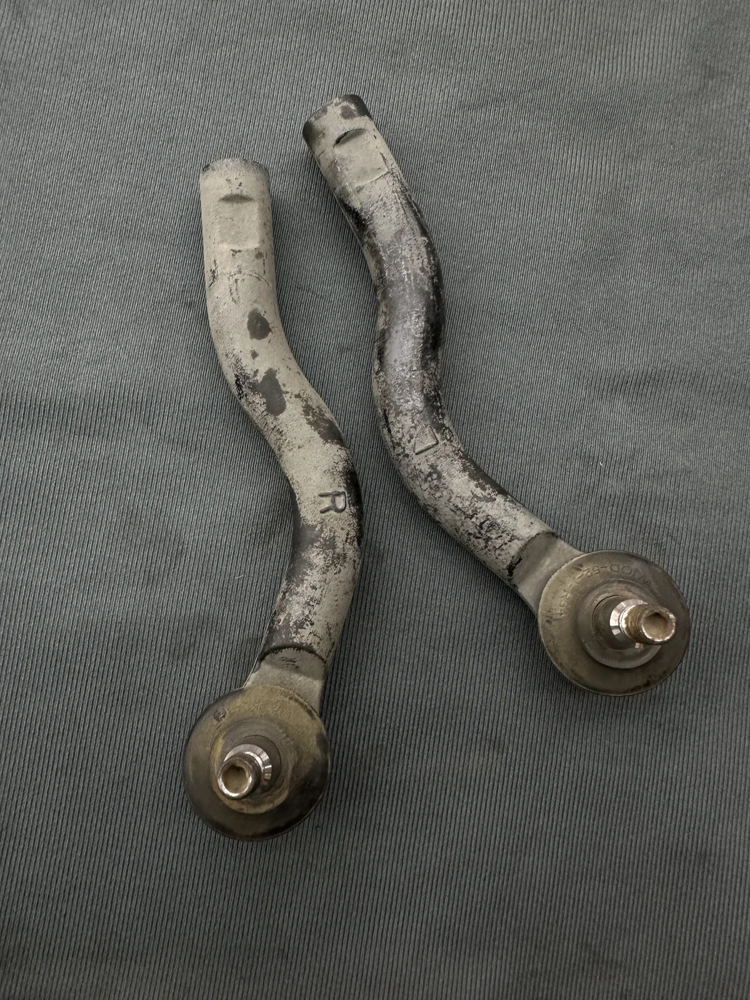
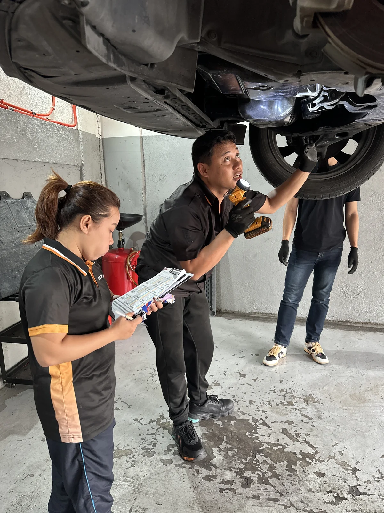
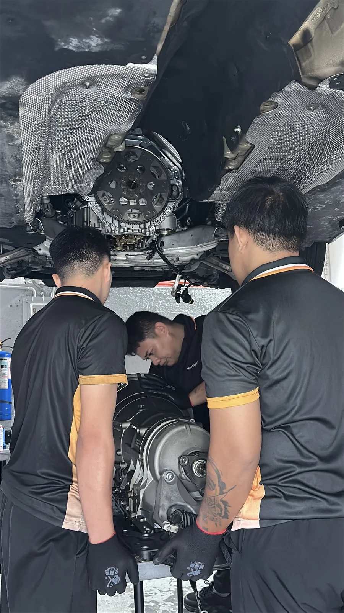
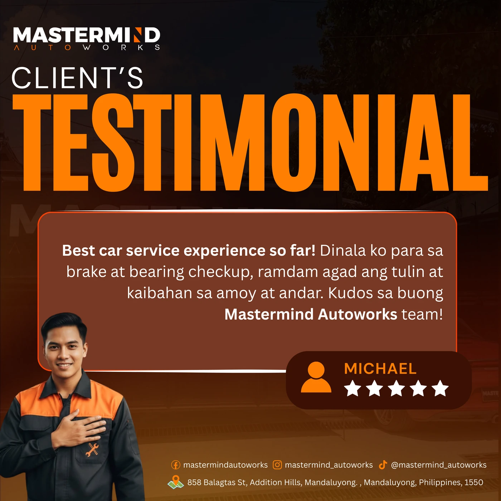

DIAGNOSIS
Understand the cause before choosing the repair.
Inspection, scan data, testing, and technician judgement come before the recommendation.
01 — Premium automotive care in Mandaluyong
Advanced diagnostics. Proven process.
A more considered way to care for your car.
Mastermind Autoworks combines modern diagnostics, experienced technicians, and a deliberate service process so every recommendation starts with a reason.

02 — The Mastermind standard
Good service is more than completing a repair. It is knowing what was checked, understanding what was found, and deciding what to do next with clear information.
Explore Our StandardDIAGNOSIS
Inspection, scan data, testing, and technician judgement come before the recommendation.
CLARITY
We structure the conversation around the problem, the evidence, and the next practical step.
WORKMANSHIP
Repair is followed by checks appropriate to the work performed before the vehicle is released.
NOT SURE WHERE TO START?
Tell us what the vehicle is doing.Warning light, noise, vibration, maintenance due, or something that simply feels wrong—we can start from the symptom.03 — Our services
Each service has its own page with symptoms, what we inspect, what the process looks like, and how to schedule when you are ready.
01 — DIAGNOSTICS
Structured fault finding, scan data, inspection, and testing for modern vehicles.
02 — MAINTENANCE
Maintain performance, reduce avoidable wear, and plan upcoming work with confidence.
03 — POWERTRAIN
Focused diagnosis and service for engine, transmission, and drivetrain concerns.
04 — CHASSIS
Inspect ride, stability, noise, steering response, and worn chassis components.
05 — ELECTRICAL
Charging, starting, wiring, modules, sensors, and electronic fault diagnosis.
06 — START HERE
Start with the symptom. Share what changed, when it happens, and any warning lights or recent work.
Service availability and exact scope may vary by vehicle and current shop capability. If your concern is not listed, contact the team before scheduling.
CAN’T FIND THE EXACT SERVICE?
Start with the concern, not the category.Send your vehicle details and symptoms. The team can help identify the most useful starting point.04 — Precision diagnostics
The process starts by understanding the vehicle—not by guessing which part to replace. Findings are organized so the customer can make an informed decision.
Start with the complaint, visible condition, and relevant vehicle systems.
Use scan data, testing, and measurement to narrow down the actual cause.
Translate the findings into clear language: what was found, why it matters, and what can wait.
Present the next practical step so the customer can decide before work proceeds.



READY FOR A PROPER CHECK?
Give the team the symptom and vehicle details.A clear description of the symptom helps Mastermind understand the concern before you arrive.05 — Before you visit
Use these quick details to plan your visit. If you are unsure which service applies, message the team first and start with the symptom.
06 — Client testimonials
Selected client testimonial artwork supplied for Mastermind Autoworks. You can also open the public Google Maps listing for independent review context.

07 — Confidence before the repair
The goal is not simply to list what can be replaced. It is to make sure the recommendation is supported by what the vehicle actually needs.
08 — Practical details
Choose the quickest way to reach the team or schedule your visit.